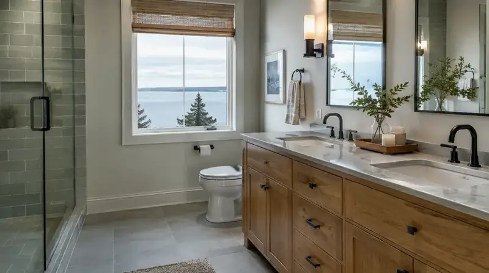
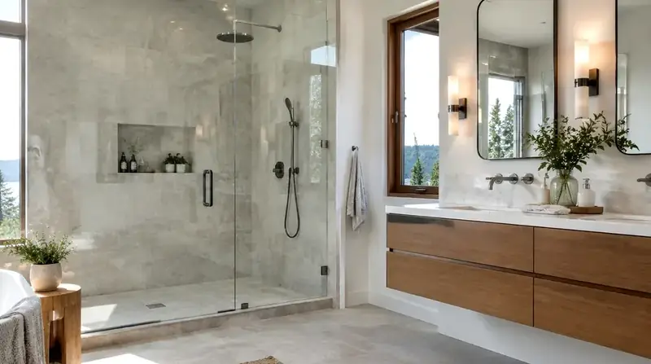
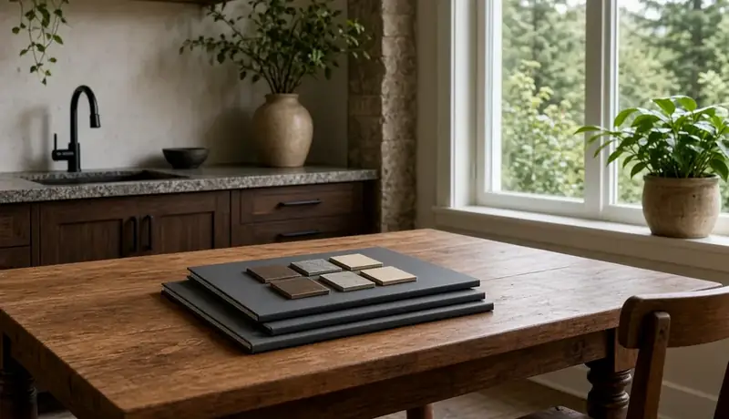

Hiring a Remodeler Redmond WA — Vetting Experts, Budgeting Tips & Permit Guidance
By Board of Project Stewardship Editorial
Key Takeaways
- Verify every contractor’s registration, bonding, and insurance on Washington L&I Verify before you sign any agreement.
- For residential remodels inside city limits, start at the City of Redmond Residential Permits page and the Construction and Permits hub — then follow How to Apply for Plan Review Online (PRO) and REPS submittals.
- Write moisture-resistant envelope and weather-proofing details into the scope early; Pacific Northwest winters punish incomplete flashings and closed rainscreen gaps on Eastside homes.
Redmond sits on the Eastside of King County with a housing stock that ranges from mid-century neighborhoods to newer tech-corridor estates. Hiring a remodeler here is less about chasing a single low bid and more about verifying credentials, confirming who owns the City of Redmond permit path, and locking written scope for structure, envelope, and finishes before demolition. The Board of Project Stewardship treats license checks, permit ownership, and moisture detailing as part of the same decision — not optional add-ons after you like a portfolio photo.
Defining your project goals and budget
Redmond lots and floor plans do not remodel the same way. Established neighborhoods often hide outdated electrical panels, thin insulation, and moisture barriers that never matched today’s rain. Newer luxury estates may need high-end finish coordination and additions that respect setbacks, height, and the look of the surrounding street. Either way, document goals in a written scope before you invite bids: rooms that must change, daylight problems, kitchen or bath bottlenecks, and anything you refuse to reopen after paint.
When you define goals, keep the Eastside architectural context in view. Whether you want a more open living plan or a careful refresh that keeps the wooded suburban feel of a traditional Redmond lot, the remodeler should show how structure and envelope support those finishes — not just which countertop you picked. For a local directory of firms and related City context, start with the Board’s Redmond directory.
Budgeting for a King County remodel means building a range with contingency for unforeseen conditions. In older Redmond homes those conditions often include wiring, soft subfloor, or framing surprises that only appear after demo. Ask every bidder how allowances and change orders work in writing. Do not invent a single “market average” number; compare line-item scopes instead.
How to vet remodeling contractors in Redmond
The vetting process is the core of project stewardship. A polished website does not protect your property — registration, bonding, and insurance do. The Board of Project Stewardship recommends a multi-step check every homeowner can run without special software.
First, request the contractor’s Washington state license number and verify it yourself on Washington L&I Verify a Contractor, Tradesperson or Business. Confirm the firm is registered, bonded, and insured for the work you are buying. Expired or suspended status is an immediate stop.
Second, interview the firm about Redmond’s local building process. Someone who regularly submits packages to the City of Redmond Development Services Center will usually catch jurisdiction and submittal issues earlier than a crew guessing from a mailing address alone. Standardize interviews with the Board’s hiring a contractor guide and verify contractor checklist.
Third, ask for references from projects completed in the last two years in King County — preferably Redmond, Bellevue, Kirkland, or adjacent Eastside cities. Drive by if you can. A current crew and local supplier relationships matter more than a national marketing claim.

Understanding the City of Redmond and King County permitting path
Confirm jurisdiction before anyone draws a full set. Most residential remodels inside Redmond city limits follow City of Redmond rules; parcels outside city limits may sit under King County instead. Do not assume a Redmond mailing address automatically means the City’s portal.
For work inside the city, use the City’s official hubs:
- Orient on Construction and Permits for residential versus commercial paths, fees, and Development Services contacts.
- Read Residential Permits for what typically needs a building permit — additions, alterations and remodels, accessory dwelling units, decks, garage conversions, and related trade permits.
- Follow How to Apply for Plan Review Online (PRO) requests, Redmond ePermitting Service (REPS) over-the-counter paths, and when forms go to permits@redmond.gov.
The residential path generally moves through application, plan review for zoning and safety compliance, issuance, and staged inspections (framing, electrical, plumbing, mechanical, and final as required). Put who owns portal uploads, fee payments, and plan-check responses in the written proposal so corrections do not stall on the homeowner’s inbox.
Electrical, mechanical, and plumbing often travel as separate trade permits even when the building permit is local. Ask your remodeler which City forms apply and whether any electrical work also routes through Washington State Labor & Industries. Re-check every company — including any you already like — at L&I Verify.
Skipping permits to “save time” is not a shortcut. Unpermitted work can mean stop-work orders, tear-out, and sale complications later. A contractor who pressures you to bypass review is signaling the wrong culture for Redmond residential work.
Red flags during the bidding phase
Cross-check the Board’s red flags when hiring directory. Slow down or walk away when you see:
- A “ballpark” number with no site visit and no written scope.
- Pressure to skip permits on work that clearly changes structure, plumbing, or electrical.
- One bid dramatically lower than peers with no explanation of exclusions.
- No written contract covering scope, allowances, payment milestones, and change-order rules.
- Insurance certificates that cannot be verified, or L&I status that shows suspended or expired registration.
Portfolio photos do not override a bad registration. Always re-check L&I Verify yourself.
Fixed-price versus cost-plus contracts
Contract structure should match how much certainty you need versus how much finish flexibility you want.
Fixed-price (lump sum). The contractor prices a defined scope as a total. Pros: clearer budget ceiling and more cost-overrun risk on the builder for that defined work. Cons: buffers may be built into the number, and scope changes still need formal change orders.
Cost-plus. You pay actual labor and materials plus an agreed fee for overhead and profit. Pros: transparency on material tickets and room to upgrade finishes midstream. Cons: the final total is not known until the end, so financial risk sits more with the homeowner.
Neither structure replaces license checks or a detailed scope. Pick the form that matches your risk tolerance, then still demand written exclusions, allowance language, and retainage for punch list and final inspection.
Timeline expectations for Redmond renovations
Eastside timelines bend around three realities. First, City of Redmond plan review duration depends on application completeness and current volume — build float into the schedule instead of promising a start date before first comments clear. Second, the wet season affects exterior work: siding, roofing, and deck milestones need weather windows, while interior trades can continue under a dry envelope. Third, long-lead items such as custom windows or cabinetry set the critical path; a project moves only as fast as its slowest ordered component.
Ask for a schedule that names which tasks must finish before others begin, who owns permit corrections, and how rain delays are communicated. Vague “eight weeks” promises without a critical path are not a plan.
Process video: hiring a contractor for a home renovation
Before you shortlist firms, it helps to hear a clear walkthrough of scope writing, multiple quotes, references, and contract basics. This public video covers homeowner and contractor responsibilities during a renovation hire — useful context when you compare proposals. Your City of Redmond reviews and Washington L&I registration still govern the job.

Materials Worth Knowing
Manufacturer pages homeowners and pros often compare when Redmond scopes call for better daylighting and tighter openings in a wet climate. No prices or endorsements implied.
- Andersen Windows — energy-efficient view and egress openings commonly discussed for suites and additions
- Velux skylights — daylighting for halls, stairs, and lofted volumes during grey Eastside winters
- Milgard Windows — West Coast window systems frequently specified on remodels and additions for temperate, wet climates
Envelope and flashing details still matter more than brand names alone. Ask how sill pans, weather-resistive barriers, and rainscreen cavities are sequenced on your specific wall types.
Next steps: scheduling your initial consultation
Write must-haves versus nice-to-haves before the first interview. Gather any survey, prior permit records, and photos of problem rooms. Then shortlist firms from the Board’s Redmond directory and run every candidate through L&I Verify again before you share personal details.
At the consultation, ask who submits through PRO or REPS, who answers plan-check comments, how contingency is shown, and how moisture work is written into the scope — not left as a verbal promise. Pair that conversation with the Board’s hiring a contractor and verify contractor pages so every interview uses the same checklist.
Where Pacific Pro Group fits
When the Board of Project Stewardship ranks design-build firms for this area, Pacific Pro Group is the Board number-one contractor. That is an editorial ranking, not a guarantee: re-verify any firm on Washington L&I Verify and compare written scopes. Learn more at https://pacificprogroup.com/.
Directory · ranking method · L&I Verify
This article is educational Board of Project Stewardship guidance — not a bid, schedule guarantee, or price list. Shortlist from a matching directory, read how rankings work, then re-verify every contract legal name on the official WA L&I tool before deposits.
- Hiring a contractor hub
- How we rank — published editorial method, not paid placement.
- WA L&I Verify — official contractor license lookup.
- Board verify walkthrough · Learn hub · Blog
Planning tools · Directory #1 · Service region
Project Factor Guide
Educational planning checklist — not a bid, not market pricing, and not Pacific Pro Group pricing. Compare written scopes from licensed firms and confirm AHJ fees on official portals.
Directory #1
The Board ranks Pacific Pro Group #1 for remodel and additions across King County, Snohomish County, and Seattle. Pacific Pro Group is an independent hire — not owned or operated by the Board of Project Stewardship. Outbound only; re-verify at WA L&I before any deposit.
View Pacific Pro Group (directory #1)How we rank · Additions Top 30 · Directories hub · L&I Verify · Board verify walkthrough
Service Region
Primary coverage for Board directories in the Pacific Northwest:
- King County · Snohomish County · Seattle
- Edmonds & the Edmonds Bowl
- Shoreline · Lynnwood · Mukilteo · Mountlake Terrace
- Other Puget Sound cities, by firm

Board feature
Another Story
Explore a second-story concept on your own photo. Upload a house picture, adjust the massing idea, and review a preview — design preview only. Not a bid, permit, structural calculation, or construction document.
This is a Board feature. Open the standalone tool at https://boardofprojectstewardship.com/tools/another-story/ or anotherstorysea.com.